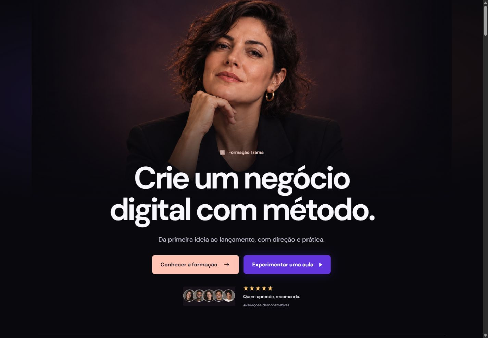
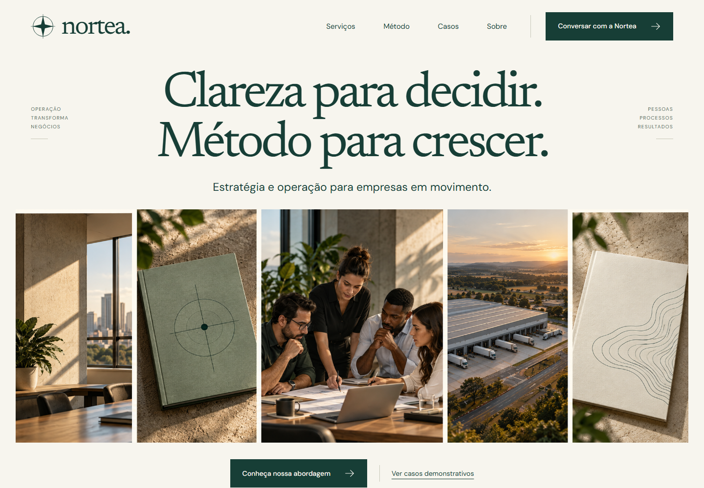
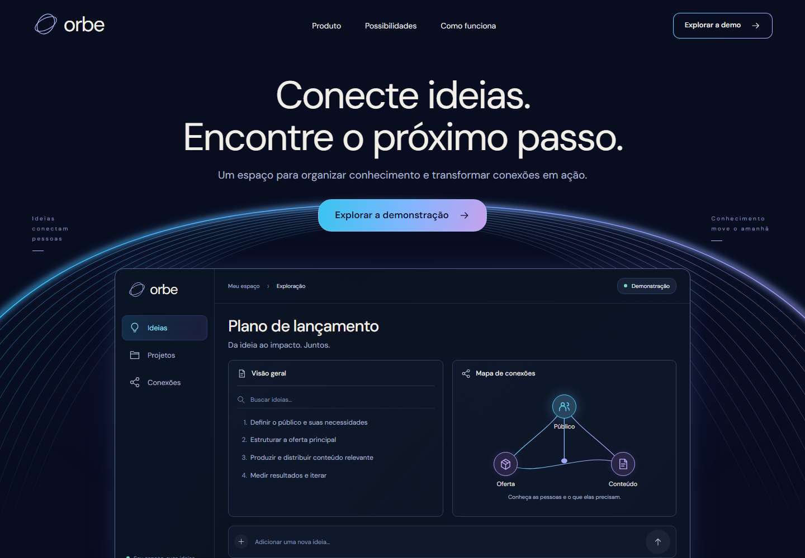
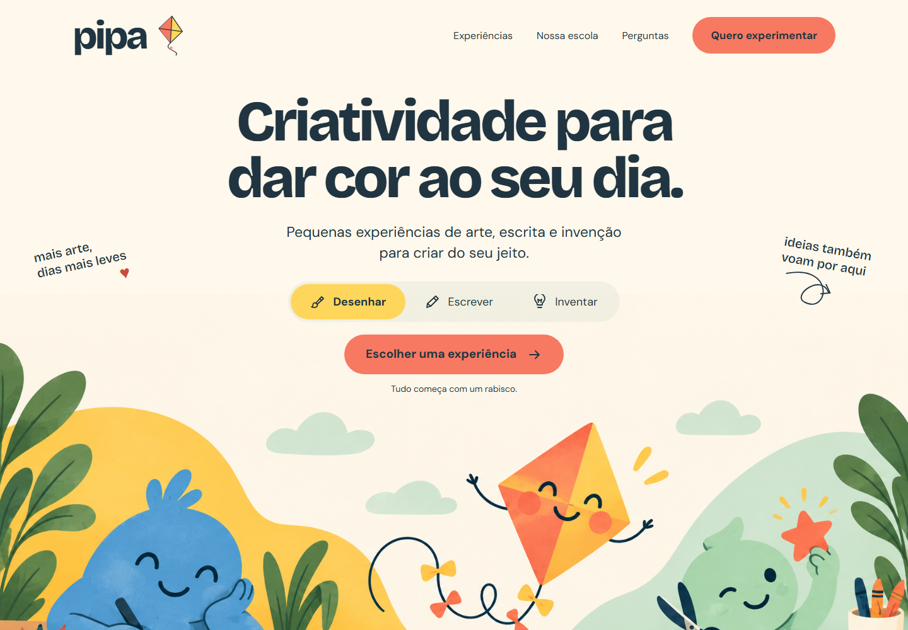

Trama
Negócio digital. Toda dark, com currículo expansível, cards, projetos, mini-aula e planos demonstrativos.
One-pages completas, com marcas e arte próprias. Explore as demonstrações, escolha uma direção e adapte o pacote inteiro para o seu projeto.

Negócio digital. Toda dark, com currículo expansível, cards, projetos, mini-aula e planos demonstrativos.

Corporativo. Tipografia editorial, serviços selecionáveis, casos filtráveis e contato local.

Futurista. Luz em 2D e um produto que você pode explorar: ideias, projetos, conexões e planos.

Divertido. Personagens originais e três experiências para desenhar, escrever e inventar.